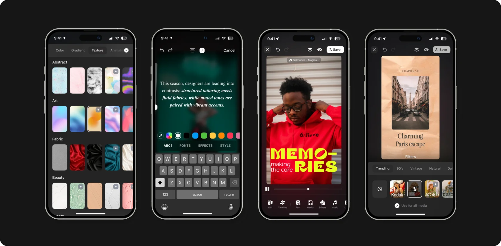

Stepa Dev
Senior Designer – руководство командой, исследования, дизайн-стратегия, проектирование взаимодействия, визуальный дизайн, менторство
Прошёл путь от создания интерфейсов до системного развития дизайн-процессов в команде мобильных продуктов. Внедрил стандарты работы с дизайном и выстроил новый AI-assisted процесс передачи макетов в разработку.
Достижения и вклад
- Проектировал интерфейсы для новых мобильных приложений и улучшал существующие продукты.
- Систематизировал работу с макетами в Figma: внедрил структурный подход к компонентам, стилям и variables.
- Разработал внутренние гайдлайны по коммуникации, оценке задач и предоставлению фидбека в дизайн-команде.
- Выстроил новый процесс передачи дизайна в разработку: дизайнеры создают интерфейс в Figma и с помощью AI-инструментов переносят UI-основу в код.
Результаты
- Повысил системность и качество дизайн-работы внутри команды.
- Снизил объём ручной работы разработчиков над интерфейсами, позволив им сосредоточиться на функциональности продукта.
- Сократил цикл создания и реализации дизайна с 3–4 месяцев до нескольких недель.
